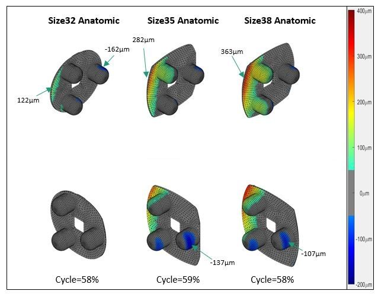

Cementless Patellar Implant Micromotion During a Single-Leg Lunge
Feb 2018 – Aug 2020 · M.S. thesis (Bioengineering, 2019)

Background & approach
Early stability of cementless knee components is essential for bone ingrowth and long-term fixation, yet few studies had tested cementless patellar implant micromotion.
Seven patient-derived single-leg-lunge loading profiles were applied to eleven cementless anatomic and medialized-dome patellar components implanted in synthetic bone on an AMTI VIVO joint simulator. Implant–bone relative motion was measured by GOM Aramis digital image correlation and used to validate a finite element model.
Key findings
- The model distinguished loading conditions and measurement locations (lateral, central, medial) and captured experimental trends.
- RMS difference between model and experiment was 22.4 µm (r = 0.97) for the 32-mm dome and 39.9 µm (r = 0.96) for the 35-mm anatomic implant.
- Both implant type (dome vs. anatomic) and size influenced micromotion.
Significance
The validated model supports pre-clinical assessment of new cementless patellar implant designs.
Methods & tools
AMTI VIVO joint simulator, GOM Aramis DIC, Optotrak, Abaqus, MATLAB, fixture design and machining
Related publications & presentations
- Han X, Yang H, Navacchia A, Rullkoetter PJ, Clary CW. Validation of Model-Predicted Cementless Patella Displacements During Lunging. 32nd ISTA Congress, Toronto, Canada, 2019.
- Han X, Yang H, Navacchia A, Rullkoetter PJ, Clary CW. Evaluating Initial Stability of a Cementless Patellar Implant During a Single-Leg Lunge. 33rd ISTA Congress, Maui, HI, 2022.